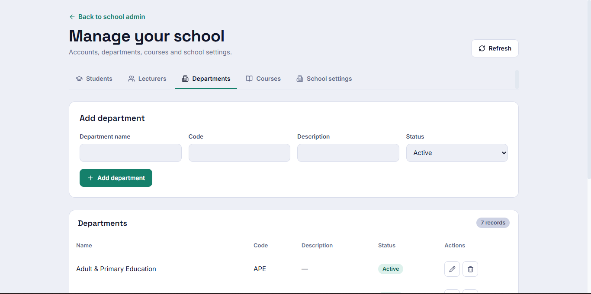
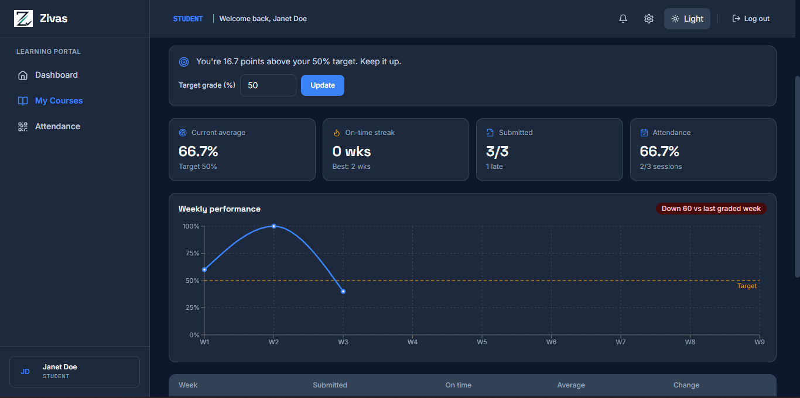

Course workspaces
Keep weekly learning materials, activities, assignments and course communication together.
Zivas brings the essential work of teaching, assessment and academic coordination into one organised workspace — so educators can focus on learning, not chasing administration.

Zivas is built around connected workflows rather than a maze of tools. Educators organise their courses, students know what to do next, and institutions get a clearer view of academic activity.
Keep weekly learning materials, activities, assignments and course communication together.
Publish coursework, collect student work, review submissions and manage grades in one workflow.
Run attendance sessions with QR check-in and a fallback code, with records connected to the course.
Bring course-based assessment activities into the same learning environment.
Understand submissions, attendance and published grade outcomes through learner and course views.
Give institutions tools to organise departments, courses, educators and learners across their workspace.
Institutional performance views bring course activity into focus, helping administrators review submissions, attendance, published grades and student feedback without replacing the people who make academic decisions.

From course setup to reviewing student work, Zivas keeps the everyday teaching workflow connected and easier to follow.

Students can access course materials, submit assignments and follow their academic progress from their learning workspace.

Each role gets a focused experience, while the work stays connected across the learning environment.
For independent tutors, lecturers and teaching teams who need a dependable way to organise courses, activities and student work.
Explore educator workspace →For schools, colleges and universities coordinating people, departments, courses and academic performance.
Explore institution workspace →For learners who need a clear, accessible place to follow coursework, submit work and understand progress.
Explore student workspace →Adopting a platform should not mean figuring everything out alone. Zivas can support institutional onboarding and implementation around the workflows available in the product.
Guidance for setting up the institutional workspace, departments, courses and administrator access.
Practical walkthroughs to help educators and administrators understand the workflows they will use.
Structured assistance with rollout planning, account preparation and adoption feedback.
Role-based demonstrations for institutional leaders, educators and student representatives.
A clear channel for pilot users to report friction and help prioritise product improvements.
Support conversations to help teams resolve questions as they put the platform into everyday use.
Set up the learning workspace, courses and weekly activities.
Share materials, communicate updates and record attendance.
Collect submissions, review work and publish grades.
Review progress and course performance to guide next steps.
Explore current plans or speak with the team about institutional requirements and rollout.
Join the early access programme or request a guided walkthrough for your organisation.